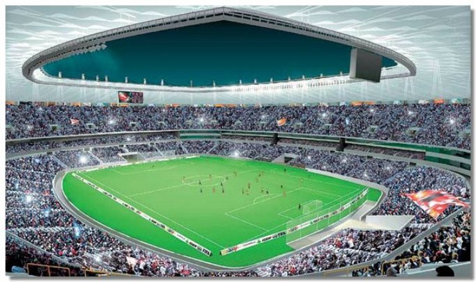

Mané Garrincha

- 
O Estádio Nacional de Brasília Mané Garrincha, também conhecido como Estádio Mané Garrincha, Estádio Nacional de Brasília ou simplesmente Mané Garrincha, é um estádio de futebol e arena multiuso brasileiro em reconstrução na cidade de Brasília, no Distrito Federal.
Faz parte do Complexo Poliesportivo Ayrton Senna, que engloba também o Ginásio Nilson Nelson e o Autódromo Internacional de Brasília Nelson Piquet. Atualmente, o estádio está em reformas, que vão amplicar sua capacidade para mais de 71 mil torcedores. A obra será oficialmente inaugurada no dia 21 de abril de 2013.